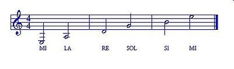

Conoscenza delle note
La conoscenza delle note
La prima cosa, da mettere in chiaro, è la corrispondenza fra la scala musicale di sette note e la corrispondenza internazionale, utile per suonare la chitarra. Quindi, si ha:
| Note | Do | Re | Mi | Fa | Sol | La | Si |
|---|---|---|---|---|---|---|---|
| Grado | C | D | E | F | G | A | B |
Dal basso verso l’alto, si contano le corde della chitarra nel seguente modo:
Mi cantino – Si – Sol – Re – La – Mi
La corrispondenza con il pentagramma è la seguente:
È chiaro che premendo le corde in corrispondenza dei vari tasti, si ottengono altre note. Per esempio, premendo la corda La, al terzo tasto, si ottiene un Do, mentre, premendo la corda Re, sempre al terzo tasto, si ottiene un Fa etc. Da questo si evince che: una stessa nota, ad esempio Do, può essere suonata premendo le corde in tasti differenti sulla tastiera della chitarra.
Per trovare un diesis basta spostarsi un tasto avanti, per un bemolle, invece, basta spostarsi un tasto indietro, a eccezione degli intervalli fra Mi – Fa e fra Si – Do. La distanza fra ogni tasto della chitarra è di un semitono.